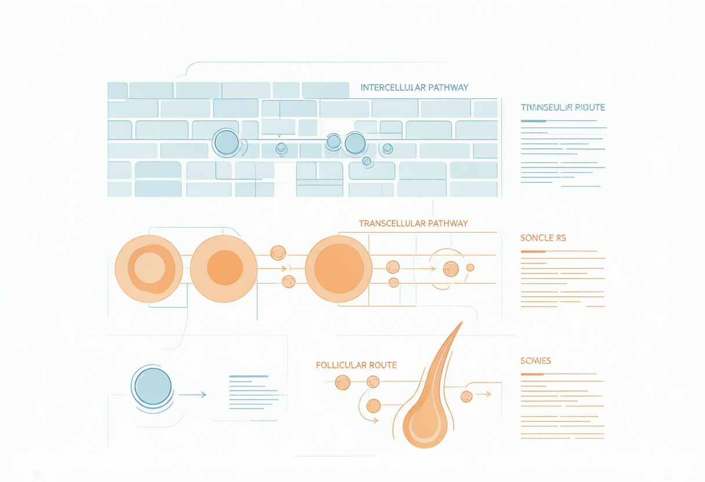

一句话结论(双视角)：工程师:透皮递送的本质是「让对的活性物以够高的浓度到达对的皮肤层」——靠选对穿透路径(细胞间/跨细胞/毛囊)+ 选对载体(脂质体/醇质体/传递体/NLC)+ 必要时上促渗剂,三者叠加才有真功效。产品经理:「吸收好」是最被滥用也最该被讲清楚的卖点——消费者听不懂「细胞间扩散」,但能听懂「把精华送到真皮层起作用」;把递送技术翻译成「看得见的功效」才是差异化叙事。
一、机理:角质层屏障与三条穿透路径
角质层(SC)是透皮吸收的主屏障:无核角质细胞(砖)+ 细胞间脂质(灰浆)。活性物穿透 SC 主要靠三条路:① 细胞间途径——沿细胞间脂质蛇形扩散,是大多数分子的主要路径,受脂质有序度与分配系数主导;② 跨细胞途径——直接穿过角质细胞,亲水小分子的补充路径;③ 毛囊/附属器途径——经毛孔、汗腺「绕开」SC 的旁路,对纳米粒、离子、大分子(如多肽)尤其重要。关键参数:分配系数(logP,亲脂性适中最佳)、滞后时间(lag time)、 Flux(稳态流量);封包(occlusion)通过提升水合、软化脂质可数倍提升渗透。
- 亲脂分子(logP 1–4)走细胞间脂质最快;强亲水/大分子(多肽、核酸、谷胱甘肽)天然难穿透,必须靠载体或物理破壁。
- 促渗的两大抓手:「松脂质」(乙醇/丙二醇/表面活性剂/萜类扰乱板层)+「载着走」(柔性囊泡把活性物包进去一起穿)。
- 你递送笔记里的 NDS(纳米脂质体包裹)属「载着走」,DMIS(双-二乙氧基二甘醇环己烷二羧酸酯)属「松脂质」促渗剂——正是递送的「双轨」。
- 屏障与递送是同一枚硬币:神经酰胺补「砖墙」、递送技术破「砖墙送药」,二者在敏感肌/抗衰配方里往往并用。
二、前沿证据(2023–2026)
- 2025 Int. J. Mol. Sci. 综述确认磷脂囊泡(脂质体)是提升活性物皮肤穿透、控释、降低刺激的标准方案;经典脂质体停留在 SC 浅层,弹性囊泡才能深递。
- 醇质体(Ethosomes,含 20–45% 乙醇):乙醇扰乱 SC 脂质熔点、提升流动性,柔性囊泡可「挤过」小于自身体径的孔道,递送量与深度显著优于经典脂质体与醇溶液。
- 传递体(Transfersomes,10–25% 表面活性剂 + ≤10% 乙醇):超变形、耐压,ex vivo 渗透可达 86%(混悬液 <27%);侵透体(Invasomes)再加萜类协同,表皮/真皮沉积可达脂质体 5.5 倍。
- NLC/SLN(纳米结构脂质载体):高载药、控释、稳定,谷胱甘肽/白藜芦醇包埋后穿透与生物利用度显著提升;微针+柔性囊泡是亲水/大分子透皮的「破壁」组合。
- 表面活性剂作促渗剂机制清晰(单体/胶束/亚胶束穿透三说),但浓度与结构决定刺激风险——配方需在「促渗」与「屏障安全」间取舍。
三、工程师配方落地(靶点→原料→添加量→配伍/pH/稳定)
透皮递送原料落地表
| 靶点/作用 | 推荐原料(INCI) | 建议添加量 | 配伍·pH·稳定要点 |
|---|---|---|---|
| 包裹亲脂活性(维A/神经酰胺) | 磷脂脂质体 / NDS 纳米脂质体 | 载药 0.5%–3% | 水/低温相加入;避免与强阳离子表活同相;粒径控制 50–200nm |
| 柔性深递(醇质体) | 乙醇 + 磷脂(卵磷脂) | 乙醇 20%–45%(载体) | 高浓度乙醇刺激需复配舒缓;pH 5–6;密封避光 |
| 超变形穿透(传递体) | 磷脂 + 非离子表活(10–25%)+ 乙醇 | 表活 1%–5% | 表活过量伤屏障;与 DMIS 协同可增效 |
| 化学促渗(松脂质) | DMIS / 丙二醇 / 氮酮 | DMIS 1%–5%;丙二醇 3%–10% | pH 友好;高浓度刺激;做人体斑贴验证 |
| 仿生层状载体 | 液晶乳化体系 | 总脂 2%–5% | 偏振光镜确认马耳他十字;冻融/离心过关 |
| 物理破壁(非普通化妆品) | 可溶性微针 / 滚针 | 医美/功效贴场景 | 普通日化不可用;属器械/药械边界 |
四、产品经理视角 · 市场沟通
「吸收好」是 consumer 最关心也最该被讲清楚的卖点。把技术翻译成「看得见的功效」:脂质体=「把精华稳稳送到起作用的地方」、醇质体/传递体=「穿透更深更准」、微针=「打开通道直送」。叙事升级路径:从「我加了 XX 成分」→「我用 XX 递送技术让 XX 成分真正起效」。但边界要守住——「促进吸收」可宣称,「透皮给药/治疗」属医疗宣称违规。
五、合规红线
- 促渗剂(乙醇/丙二醇/DMIS 等)均为普通化妆品可用原料,但高浓度有刺激风险,需人体安全数据支撑。
- 「促进吸收」「易吸收」可作化妆品宣称;不得宣称「透皮给药」「治疗」「导入药物」。
- 微针类属医疗器械/药械边界,普通化妆品配方不可用;若做功效贴需走对应注册。
- 纳米载体(脂质体/NLC)按新原料/新原料报送要求管理,需提交安全与毒理资料。
六、行动清单(今日可落地)
- 极光系列评估 NDS 包裹 + DMIS 促渗「双轨」,针对亲脂活性(视黄醇/神经酰胺)做打样。
- 用偏振光镜 + Franz 扩散池建立「载体形态—渗透量」评价 SOP,为「吸收好」备证。
- 把递送技术写进卖点:从「成分添加」升级为「递送技术让成分起效」。
- 读后对我说「加工这篇」,我压成简洁知识块入 Topics/化妆品护肤/递送系统。
- 缺口:仓库已有递送系统卡,本轮迭代应把「醇质体/传递体/NLC」补进并与神经酰胺/抗衰互链。
附图

参考资料与出处链接
- Phospholipid-Based Vesicular Systems as Carriers for Cosmeceutical Ingredients (IJMS 2025) https://www.mdpi.com/1422-0067/26/6/2484
- Therapeutic and cosmeceutical potential of ethosomes (综述) https://doi.org/10.4103/0110-5558.72415
- Transdermal Drug Delivery: Enhancing Skin Permeability & Evaluation (Pharmaceutics 2025) https://doi.org/10.3390/pharmaceutics17070936
- Advancing lipid nanoparticles in cosmetic & dermatological treatments (ScienceDirect 2024) https://www.sciencedirect.com/science/article/abs/pii/S2215038224000499
- Strategic advances in liposomes & microneedles transdermal delivery (Springer 2025) https://link.springer.com/10.1186/s12951-025-03660-z
- Surfactants as transdermal penetration enhancers (ScienceDirect 2025) https://www.sciencedirect.com/science/article/abs/pii/S0378517325012542